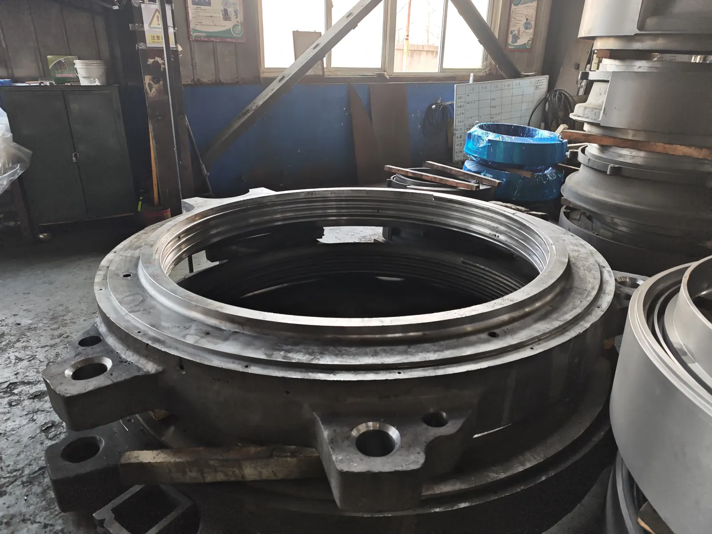
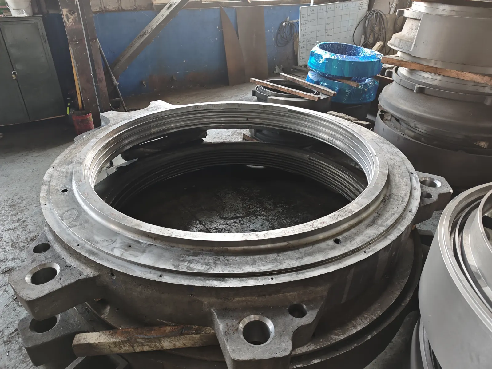
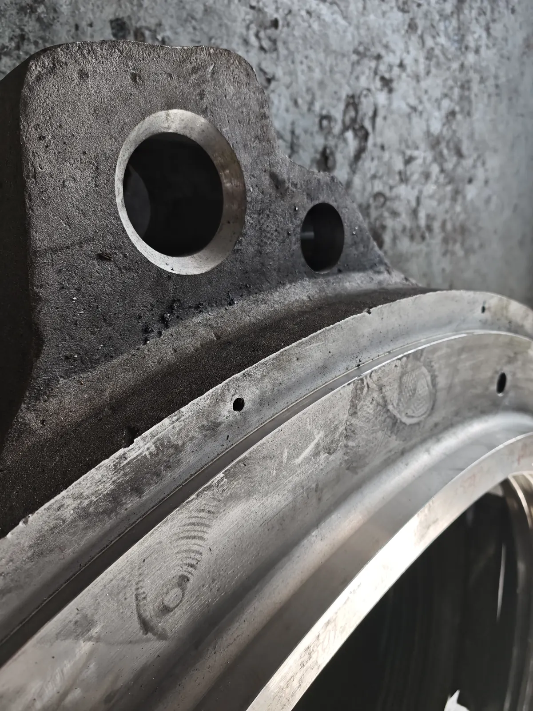
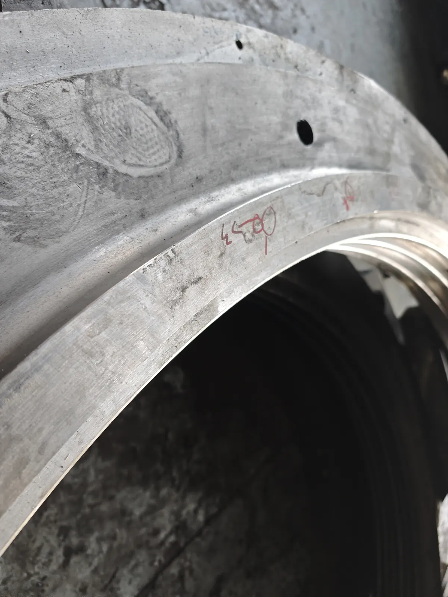

Liner fastening
Lock nuts secure the cone crusher mantle during operation and liner replacement.
Mechanical Spares
Mechanical spares for cone crusher liner changeouts, including lock nuts, mantle nuts, torch rings, feed cones and retaining hardware.

Lock nuts secure the cone crusher mantle during operation and liner replacement.
These items are often stocked together for scheduled maintenance to reduce downtime.
Threads and mating surfaces should be protected with anti-rust and impact-resistant export packing.
XCT can support mixed spare-part orders for maintenance inventory and urgent replacements.



Material and heat treatment are confirmed by part function, thread load, drawing and buyer specification.
Checks include thread dimensions, mating surfaces, hole layout, visual condition, marking and packing protection.
MOQ can start from 1 pc. Lead time depends on machining complexity and stock status. Threads are protected for export shipment.
Metso, Nordberg, Sandvik and other names identify compatible replacement applications only. XCT Mining is independent and unaffiliated.
Buyer FAQ
Many buyers order lock nuts, torch rings and retaining hardware with liners to reduce downtime during scheduled changeouts.
Send model, reference number, thread details, drawing, used-part photos, quantity, destination and required delivery date.